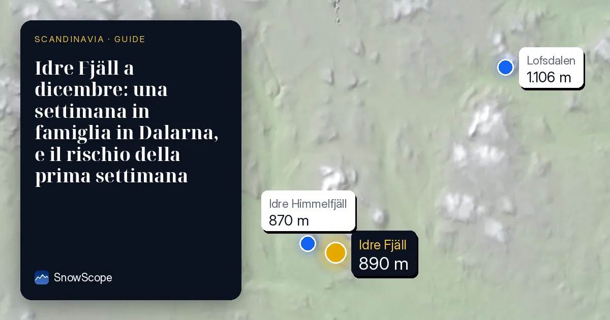

Idre Fjäll a dicembre: una settimana in famiglia in Dalarna, e il rischio della prima settimana
Inizio dicembre a Idre Fjäll è una scommessa, ma la settimana prima di Natale e la settimana di Natale stesso offrono probabilità molto migliori. In un tipico 15 dicembre, la media montagna (733 m) ha 32 cm—appena sopra la linea dei 30 cm dove lo sci risulta facile sulle piste preparate. La distribuzione del mese conta molto più della nevicata totale.
Le previsioni neve in tempo reale per Idre Fjäll nell'app SnowScopeAltezza neve, allerte powder e mappa 3D, gratis.
Quando prenotare se puoi scegliere
Solo il 39 % degli inverni passati ha avuto 30 cm o più a media montagna nella prima settimana di dicembre. Dall'8 al 14 dicembre, questa percentuale sale al 52 %. Il salto arriva nella settimana del 15–21 dicembre, quando il 65 % degli inverni raggiunge 30 cm o più. La settimana di Natale (22–28 dicembre) è la scelta più sicura: il 76 % degli inverni ha buona copertura allora.
In vetta (888 m) il quadro è ancora migliore. La settimana di Natale vede buona neve nel 83 % degli inverni. Se le tue date sono flessibili, anticipare di una settimana fa una vera differenza nelle probabilità di sciare su una base solida.


Il rischio di prenotare inizio dicembre
L'inverno scorso (2025–26) mostra perché inizio dicembre sembra incerto. A media montagna c'erano soli 28 cm il 15 dicembre e 22 cm la vigilia di Natale. Era sciabile sulle piste preparate, ma le rocce spuntavano ai lati, e molte piste hanno richiesto un'accurata battitura.
Se devi prenotare la prima settimana di dicembre, prepara un piano di riserva. Oppure guarda più a nord verso montagne più alte, o preparati a sciare solo sulle piste gestite e accetta copertura sottile in alcuni punti. La settimana di Natale dell'inverno scorso è stata molto migliore: a media montagna c'erano 29 cm il 24 dicembre.
Come è cambiato il mese
Dicembre aveva più neve in passato. Nei primi 15 inverni dei nostri dati (1980–81 al 1994–95), la media montagna aveva in media 39 cm a dicembre. Negli ultimi 15 inverni (2011–12 al 2025–26), questo è sceso a 29 cm. La percentuale di settimane di Natale con 30 cm è calata dall'87 % al 60 %.
Questo è un vero cambiamento, ma non significa che dicembre sia inaffidabile adesso—solo che devi scegliere le date con cura. Le settimane di metà-fine mese rimangono abbastanza sicure secondo gli standard regionali.
L'altitudine fa differenza
La vetta (888 m) ha sempre più neve della base (578 m). Entro la settimana di Natale, la media montagna ha 30 cm o più nel 76 % degli inverni, ma la vetta lo raggiunge nell'83 %. Il primo giorno tipico con 30 cm a media montagna è il 7 dicembre; in vetta è il 30 novembre—più di una settimana prima.
Se la tua famiglia è a suo agio su piste più ripide e sugli itinerari superiori, hai migliori probabilità di trovare una base buona. Il dislivello è piccolo (310 m), ma questi metri contano a dicembre.
E se invece Sälen?
Sälen, più a sud in Dalarna, appare simile sulla mappa ma ha probabilità di neve più deboli a dicembre. Le sue colline arrotondate danno un valore unico su tutta l'area: 28 cm in un tipico 15 dicembre. Solo il 48 % degli inverni vede 30 cm nella settimana del 15–21 dicembre, rispetto al 65 % a media montagna a Idre.
Se hai bisogno di un piano di riserva, Sälen non è. Se puoi viaggiare più lontano, le montagne più alte della Norvegia o del nord-ovest della Svezia offrono profondità più affidabili a dicembre.
Passi pratici prima di prenotare
Idre Fjäll pubblica i prezzi degli impianti tramite prenotazione dinamica sul suo sito ufficiale. Verifica il costo esatto per le tue date prima di impegnarti. Né qui né a Sälen abbiamo potuto confermare un prezzo fisso il 13 novembre.
Prenota la settimana del 15–28 dicembre se le date sono flessibili. Se devi prenotare inizio dicembre, chiedi una clausola di cancellazione gratuita e controlla la mappa della neve di nuovo a fine novembre. I giorni corti significano pianificare con cura attorno alla luce, e il freddo richiede strati per i giovani sciatori.
Consigli per sciatori
- Evita 1–7 dicembre: solo il 39 % degli inverni ha 30 cm a media montagna. La prima settimana è una scommessa.
- Punta a 15–28 dicembre: la settimana prima di Natale e la settimana di Natale danno il 65–76 % di probabilità di 30 cm o più a media montagna.
- Scia sulle piste in vetta se puoi: la vetta (888 m) ha buona neve nell'83 % degli inverni nella settimana di Natale, rispetto al 76 % a media montagna.
- Prenota con una clausola di cancellazione se le date di dicembre sono fissate mesi prima, e ricontrolla la previsione della neve all'inizio di dicembre.
- Porta strati e pianifica la giornata attorno alla luce diurna breve. La neve sottile dell'inverno scorso il 24 dicembre mostra perché la battitura e la scelta attenta della linea contano sulla copertura all'inizio della stagione.
Su questi numeri
Le altezze neve delle località sono la neve più alta sui pendii superiori alla data indicata; sono stime per un'area, non una misura in un punto. Le previsioni possono cambiare. Leggi sempre il bollettino valanghe ufficiale prima del fuoripista.
Bollettini valanghe ufficiali: Lavinprognoser (Naturvårdsverket)
Cita questo articolo
Per ricerca, didattica o stampa: numeri e grafici sono liberamente riutilizzabili con licenza CC BY 4.0 citando così.
SnowScope (2026), Idre Fjäll a dicembre: una settimana in famiglia in Dalarna, e il rischio della prima settimana, https://snowscope.app/blog/it/2026/11/idre-fjall-december-family-ski-budget-sweden.html, consultato il 2026-11-14
SnowScope (Atlas Labs). (2026, November 14). Idre Fjäll a dicembre: una settimana in famiglia in Dalarna, e il rischio della prima settimana. SnowScope snow reports. https://snowscope.app/blog/it/2026/11/idre-fjall-december-family-ski-budget-sweden.html
BibTeX
@misc{snowscope2026idrefjalldecemberfamilys,
author = {{SnowScope (Atlas Labs)}},
title = {Idre Fjäll a dicembre: una settimana in famiglia in Dalarna, e il rischio della prima settimana},
year = {2026},
month = nov,
howpublished = {\url{https://snowscope.app/blog/it/2026/11/idre-fjall-december-family-ski-budget-sweden.html}},
note = {Published 2026-11-14 20:11 UTC; accessed 2026-11-14}
}· CC BY 4.0 · Metodi, dati e strumenti →
Idre Fjäll: neve e temperatura per quota, quest'inverno vs lo scorso (strumenti) →
Segui Idre Fjäll
Gratis: un messaggio quando arriva la neve e il meteo ogni mattina.